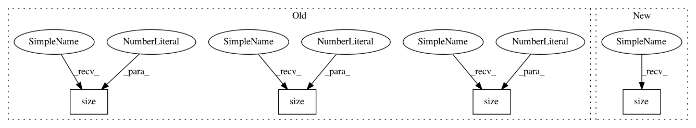

1483ec2a5bb7396d73339af3f07417e0c44b7965,util/NonparametricShift.py,Modified_NonparametricShift,_unfold,#Modified_NonparametricShift#,45
Before Change
dH, dW = stride, stride
input_windows = img.unfold(1, kH, dH).unfold(2, kW, dW)
i_1, i_2, i_3, i_4, i_5 = input_windows.size(0), input_windows.size(1), input_windows.size(
2), input_windows.size(3), input_windows.size(4)
if with_indexes:
input_windows = input_windows.permute(1, 2, 0, 3, 4).contiguous().view(i_2 * i_3, i_1)
After Change
dH, dW = stride, stride
input_windows = img.unfold(1, kH, dH).unfold(2, kW, dW)
i_1, i_2, i_3, i_4, i_5 = input_windows.size()
if with_indexes:
input_windows = input_windows.permute(1, 2, 0, 3, 4).contiguous().view(i_2 * i_3, i_1)
return input_windows, i_2, i_3, i_1
In pattern: SUPERPATTERN
Frequency: 3
Non-data size: 4
Instances
Project Name: Zhaoyi-Yan/Shift-Net_pytorch
Commit Name: 1483ec2a5bb7396d73339af3f07417e0c44b7965
Time: 2019-06-03
Author: yanzhaoyi@outlook.com
File Name: util/NonparametricShift.py
Class Name: Modified_NonparametricShift
Method Name: _unfold
Project Name: jadore801120/attention-is-all-you-need-pytorch
Commit Name: 0b0eabbfd972c9e3f6323bff9d39ac5fc3ba9cc7
Time: 2018-08-23
Author: yhhuang@nlg.csie.ntu.edu.tw
File Name: transformer/Translator.py
Class Name: Translator
Method Name: translate_batch
Project Name: jadore801120/attention-is-all-you-need-pytorch
Commit Name: bed0a0ae26451c9897cf1ee0f7302e42eba9b42c
Time: 2018-08-23
Author: yhhuang@nlg.csie.ntu.edu.tw
File Name: transformer/Models.py
Class Name:
Method Name: get_attn_subsequent_mask
Project Name: Zhaoyi-Yan/Shift-Net_pytorch
Commit Name: 1483ec2a5bb7396d73339af3f07417e0c44b7965
Time: 2019-06-03
Author: yanzhaoyi@outlook.com
File Name: util/NonparametricShift.py
Class Name: Modified_NonparametricShift
Method Name: _unfold